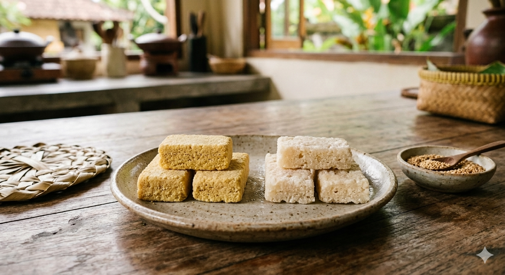
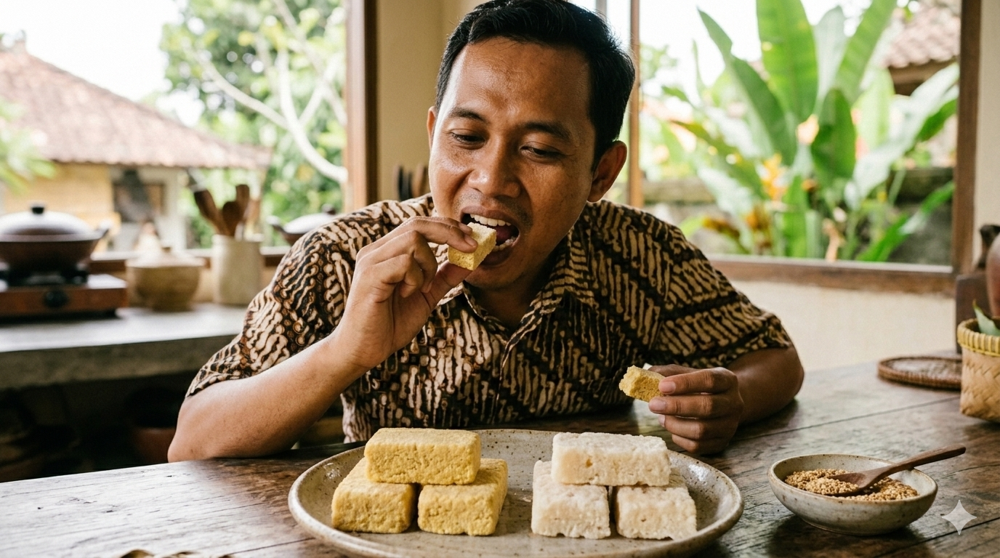
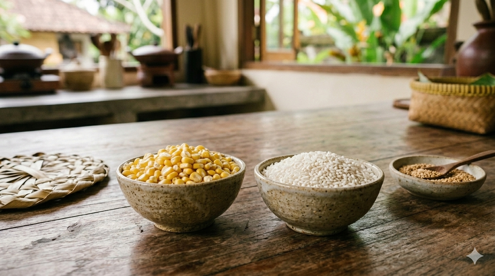

Brem dari jagung dapat dibuat dengan cara menyiapkan jagung yang sudah dipipil lalu dicuci hingga bersih, kemudian direbus atau dikukus sampai matang dan agak lembut. Setelah itu jagung didinginkan hingga suhu ruang, lalu ditaburi ragi tape yang sudah dihaluskan dan diaduk merata. Jagung yang sudah diberi ragi kemudian dimasukkan ke dalam wadah tertutup dan difermentasi selama sekitar 2–3 hari hingga menghasilkan cairan hasil fermentasi. Cairan tersebut kemudian disaring dan dimasak dengan api kecil sambil diaduk hingga mengental, lalu dituangkan ke dalam cetakan dan didiamkan sampai dingin dan mengeras sehingga terbentuk brem jagung yang siap dikonsumsi.
Brem dari beras ketan dibuat dengan cara mencuci beras ketan hingga bersih lalu mengukusnya sampai matang. Setelah matang, ketan didinginkan hingga suhu ruang, kemudian ditaburi ragi tape yang sudah dihaluskan dan diaduk hingga merata. Ketan yang telah diberi ragi dimasukkan ke dalam wadah tertutup dan dibiarkan berfermentasi selama sekitar 2–3 hari hingga menghasilkan cairan tape. Cairan tersebut kemudian diperas dan disaring, lalu dimasak dengan api kecil sambil terus diaduk sampai mengental. Setelah itu cairan kental dituangkan ke dalam cetakan dan didiamkan hingga dingin dan mengeras sehingga menjadi brem padat siap dikonsumsi.
